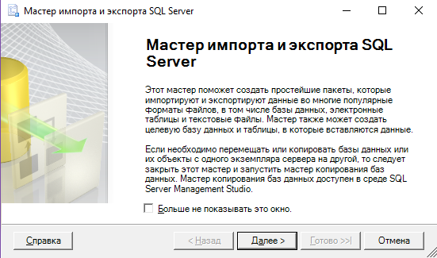
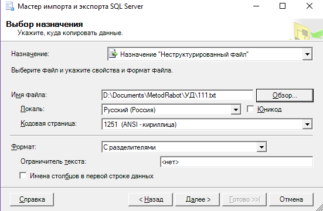

ПРАКТИЧЕСКАЯ РАБОТА №11. ПЕРЕНОС БАЗЫ ДАННЫХ НА ДРУГОЙ ТИП СЕРВЕРА
1. ЦЕЛЬ И ЗАДАЧИ РАБОТЫ
Цель данной работы – получить практические навыки переноса данных между серверами баз данных различного типа. В данном случае будет рассматриваться перенос данных между базами данных в среде сервера MS SQL Server 2008R2 и сервером MySQL.
2. КРАТКИЕ ТЕОРЕТИЧЕСКИЕ СВЕДЕНИЯ
Перенос данных между различными типами серверов не может быть сделан административными средствами. Для этого не существуют некоторые специальные инструменты. Но в любом случае администратор должен владеть навыками использования для выполнения этих задач обычных команд SQL. Подход в данном случае аналогичен тому что рассматривался в работе по переносу данных между базами данных в среде одной СУБД.
Сложности могут возникнуть при внесении данных. Так как данных может большое количество. Для автоматизации этого процесса можно выполнить выгрузку данных из исходной базы данных в некоторый файл из которого возможна загрузка данных в целевой базе данных. Обычно подходит файл формата «.xml» или «.txt». В данной работе будет использоваться файл формата «.txt».
Для выгрузки данных в текстовый файл можно воспользоваться средствами мастера импорта и экспорта данных MS SQL Server Management Studio (SSMS), запускаемого из контекстного меню любой базы данных, командой «задачи/экспорт данных».

Рис.11.1 Окно импорта экспорта данных

Рис.11.2 Выбор места назначения при экспорте данных в текстовый файл
При экспорте в текстовый файл необходимо выбрать в качестве параметра назначения – «неструктурированный файл».
Для выполнения загрузки данных из файла в таблицу в среде MySQL может быть использована специальная команда из диалекта SQL MYSQl «LOADDATAINFILE«XXX.txt» INTOTABLEXXXXXX;
3. ПОРЯДОК ВЫПОЛНЕНИЯ РАБОТЫ
1. Создать скрипты для создания объектов данных, существующих в исходной базе данных в среде MS SQL Server.
2. Создать базу данных в среде MySQL, в которую предполагается перенос данных.
3. Скорректировать исходные скрипты в соответствие с особенностями диалекта MySQL.
4. Создать необходимые данные в целевой базе данных с помощью скорректированного скриптового файла.
5. Экспортировать данные из таблиц исходной базы данных в текстовые файлы.
6. Создать скрипт для загрузки данных из файлов в таблицы целевой базы данных.
4. ЗАДАНИЕ ДЛЯ РАБОТЫ
Заданием для работы является экспорт базы данных, в которой выполнялись работы по созданию хранимых процедур и триггеров в базу данных под управлением сервера MySQL.
5. КОНТРОЛЬНЫЕ ВОПРОСЫ
1. Какие объекты в базе данных могут присутствовать?
2. Назовите команды создания таблиц в базе данных, хранимых процедур, триггеров.
3. Какие команды используются для заполнения таблиц данными?
4. Каким образом можно автоматически сгенерировать команды для создания и заполнения базы данных?
5. Какие методы создания копии баз данных вы знаете?
6. Каким образом можно выгрузить данные из таблицы в базы данных в среде SQL Server в текстовый файл?
7. Какие команды для загрузки данных из текстовых файлов можно использовать в среде MySQL?